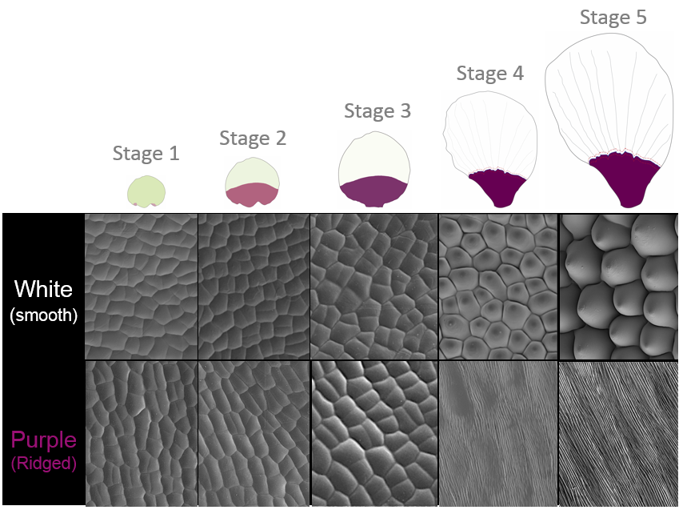
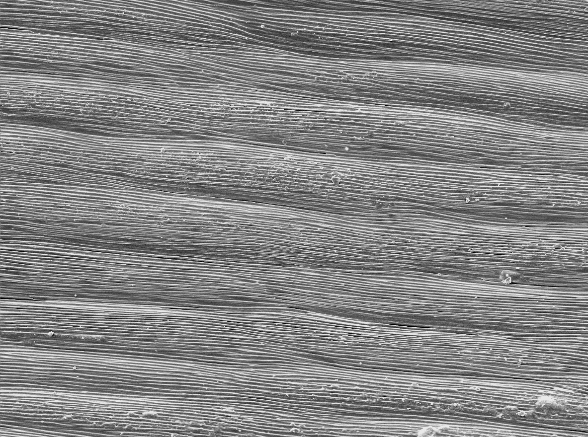
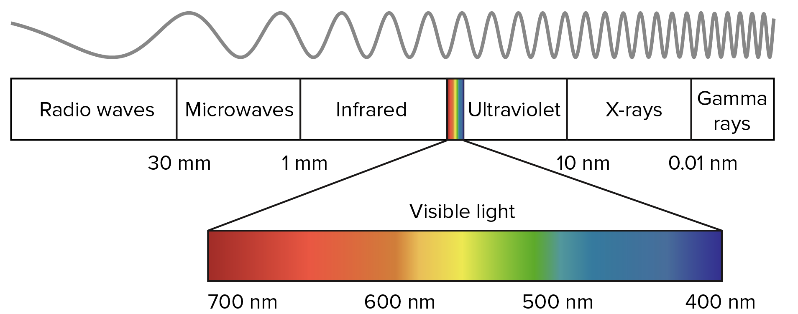
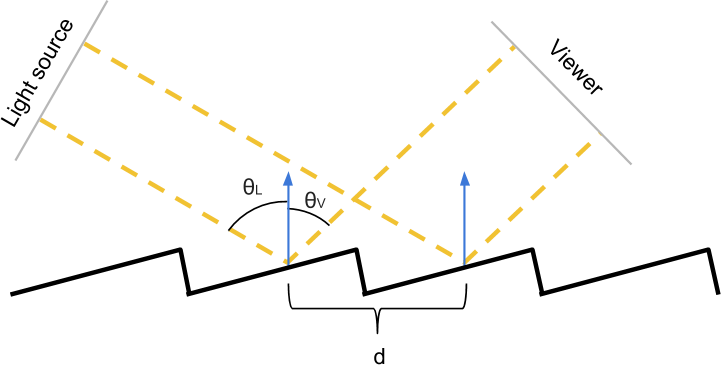
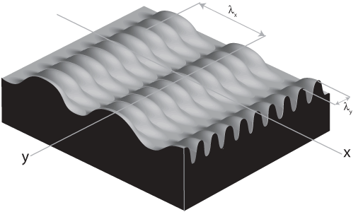
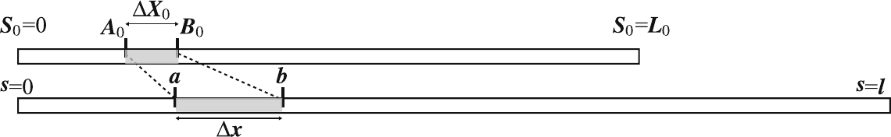
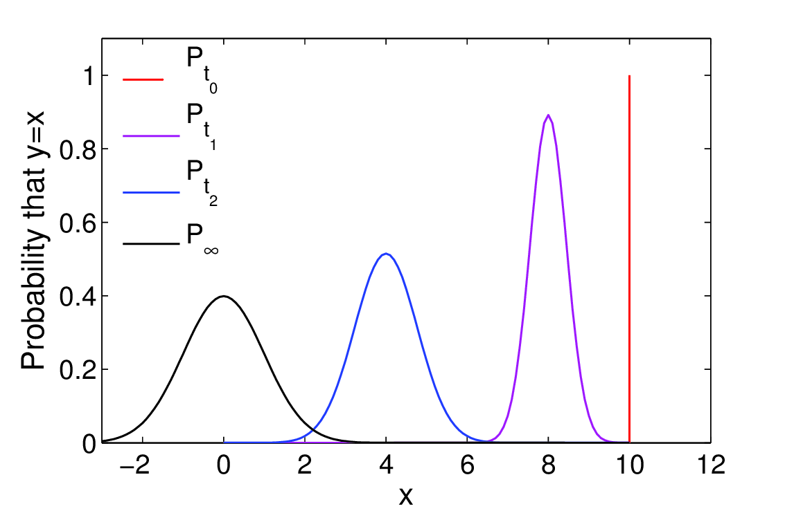
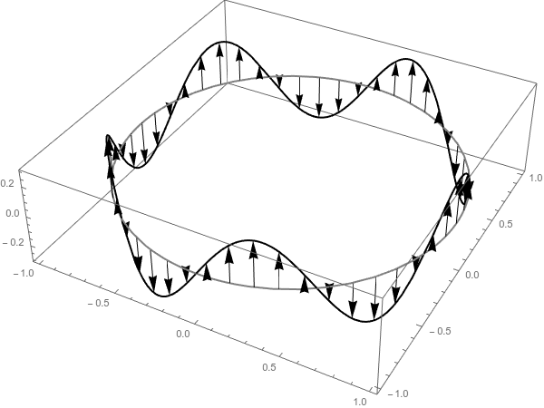

Structural Colour in Hibiscus Trionum
Ridge formation and cuticle mechanics
during develpment
13/04/2017
Lab Meeting
Carlos A Lugo
Outline
Introduction
Models
To do
Conundrum 
Conundrum 
Ridge Features: $\lambda=1.3±0.3 \mu m$, $A=L_x×L_y=(15 \times 70)(\mu m)^2$
Conundrum

Questions?
What determines the appearance/lack of ordered ridges in the cuticle
Mechanics?, Chemistry?, Genetics?
Can we develop an analytical theory?

Questions?
What determines the appearance/lack of ordered ridges in the cuticle
Mechanics?, Chemistry?, Genetics?
Can we develop an analytical theory?
Light and Structural Colour
 Patterns and Optical Description
Fields Cheatsheet
Dynamics in space and time
Fields and Oscillations I
We call fields to portions of space with one or more properties attached to it.
If $r=(x,y)$ is a point in the plane, then a quantity $\phi(r)$ represents a field.

Fields also change in time, so we often write $\phi(r,t)$. If we want to measure the change of the field respect to time or the coordinates $x$ or $y$, we often look at things such as: $\frac{\Delta \phi}{\Delta t}$, $\frac{\Delta \phi}{\Delta x}$, $\frac{\Delta \phi}{\Delta y}$.
Fields and Oscillations II
Often we only now the relations between those changes so we write equations which have the field as a solution. (diffusion, wave equation)

Mechanical Buckling Models
Classical Settings
In general an effective compression over the system is required to buckle.
The Neo-Hookean material
Current Model Revisited (Flat Cells)
The cuticule is a layer characterised by uniform principal stretches $\lambda_k$ ($k=1,2,3$). $\lambda_1$ and $\lambda_2$ in the plane of the cuticle.
The cuticule is assumed to be incompressible (i.e $\lambda_3=\frac{1}{(\lambda_1 \lambda_2)^2}$) and a Neo-Hookean constitutive law.
$$\begin{eqnarray*} \sigma_{11} &=& \mu \lambda_1^2 - p \\ \sigma_{22} &=& \mu \lambda_2^2 - p\\ \sigma_{33} &=& \frac{\mu}{\lambda_1^2\lambda_2^2}-p\\ \end{eqnarray*}$$$p$ an arbitrary pressure and $\mu$ the shear modulus. ($\nabla \cdot \sigma = 0$). An additional stress $\mu \Pi$ acts on the upper and lower faces of the cuticule via a boundary condition $\sigma_{33}=-\mu \Pi$, which implies: $$p=\frac{\mu}{\lambda_1^2 \lambda_2^2}+\mu \Pi$$
Current Model Revisited (Flat Cells) II
If $\Pi>0$ the growth induced compressive stress (normal to the cell wall) adds to the pressure in the cuticule, the model postulates: $$\Pi=\beta \left ( \lambda_1\lambda_2 - \frac{1}{\lambda_1^2 \lambda_2^2} \right)$$ Which for isotropic expansion and $\beta=1$ corresponds to a stress free expansion. Thus: $\beta>1$ is overproduction and $\beta<1$ underproduction of cuticule.
The final form of the stresses is: $$\begin{eqnarray*} \frac{\sigma_{11}}{\mu} &=& \lambda_1 \left ( \lambda_1 - \beta \lambda_2 \right)+ \frac{\beta-1}{\lambda_1^2\lambda_2^2}\\ \frac{\sigma_{22}}{\mu} &=& \lambda_2 \left ( \lambda_2 - \beta \lambda_1 \right)+ \frac{\beta-1}{\lambda_1^2\lambda_2^2} \end{eqnarray*}$$
Current Model Revisited (Flat Cells) III
Region I: $\sigma_{11}>0$, $\sigma_{22}>0$: Tensile regime in both directions, which implies a smooth cuticle.
Region II: $\sigma_{11}>0$, $\sigma_{22}<0$: Tension in direction 1 and compression in direction 2, this might lead to buckling for enough compressive stresses aligned in the 1 direction.
Region III: $\sigma_{11}<0$, $\sigma_{22}>0$: Tension in direction 2 and compression in the ortogonal co-planar directions which might cause ridge formation in direction 1.
Region IV: $\sigma_{11}<0$, $\sigma_{22}<0$: Compressive regime on both directions this might induce a disordered state in the ridge patterning for large enough stresses.
Stress free conditions: The cuticle has no stress iff there is no growth ($\lambda_k=1$) or $\beta=1$ and the growth is isotropic ($\lambda_1=\lambda_2$).
The role of $\beta$
The role of $\beta$ varies depending if it is smaller or larger than one.
For $\beta=1$ the smooth region predominates unless the stretches are very different and there is growth ($\lambda_k >=1$)
For $\beta>1$, the buckling regimes are promoted as long as the stretches are different.
The case $\beta=1$ always gives ridges in the direction of larger elongation.
The role of $\beta$
The role of $\beta$
The role of $\beta$
The role of $\beta$

Growth and remodelling?
Perturbation theory allows to obtain dynamics whose solution is effectively a ridged solution to teh first order! However it does not account for the amplitude.
Overproduction.
Perturbation theory allows to obtain dynamics whose solution is effectively a ridged solution to teh first order! However it does not account for the amplitude.
Faster cuticle production than growth seems to be effectively a key mechanism for ridge formation, at leats at the begining.
Numerical Results
Numerical Results


Work in progress: Cuticle Dynamics.
Growth, LALI.
Cuticle Chemistry
A Closer Look:

Generic framework for periodic patterning.
Reaction Kinetics:
In general if a chemical species $X$ reacts y another species $Y$ producing $Z$ one writes the scheme:
$$X+Y \overset{k}{ \rightarrow }Z$$
This translates into equations for each of the reactants and product numbers $N_X$, $N_Y$, $N_Z$:
$$
\begin{eqnarray*}
\frac{dN_X}{dt} &=& F(N_X,N_Y,N_Z)\\
\frac{dN_Y}{dt} &=& G(N_X,N_Y,N_Z)\\
\frac{dN_Z}{dt} &=& H(N_X,N_Y,N_Z)
\end{eqnarray*}
$$
Which are constrained by Chemistry, (Mass-energy conservation,etc).
Pattern Formation Tests: